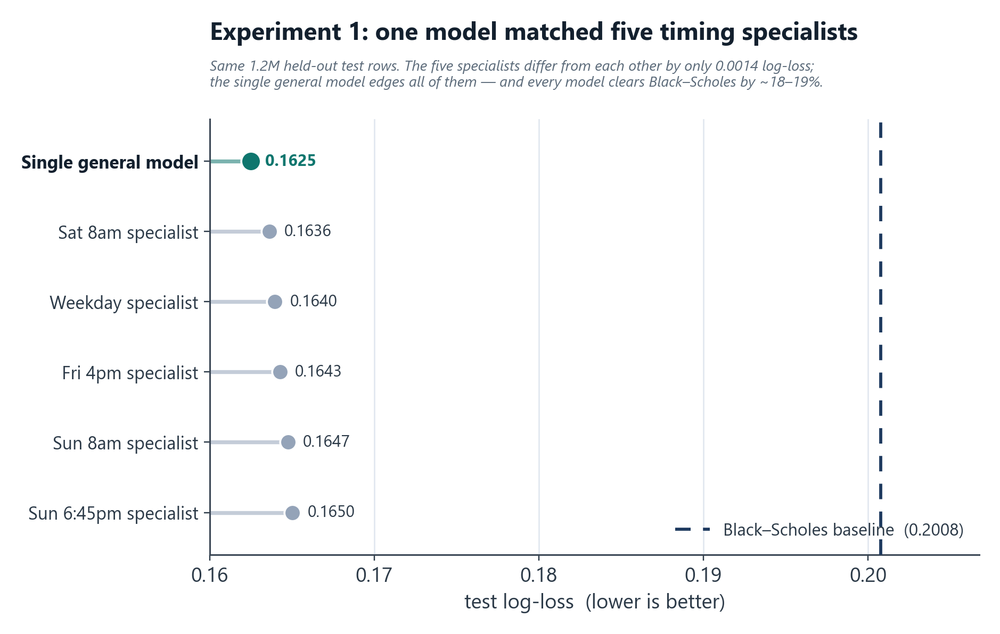
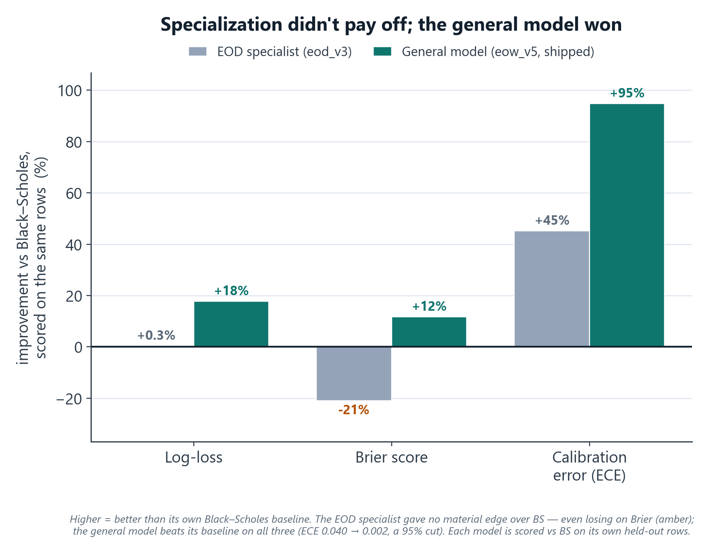
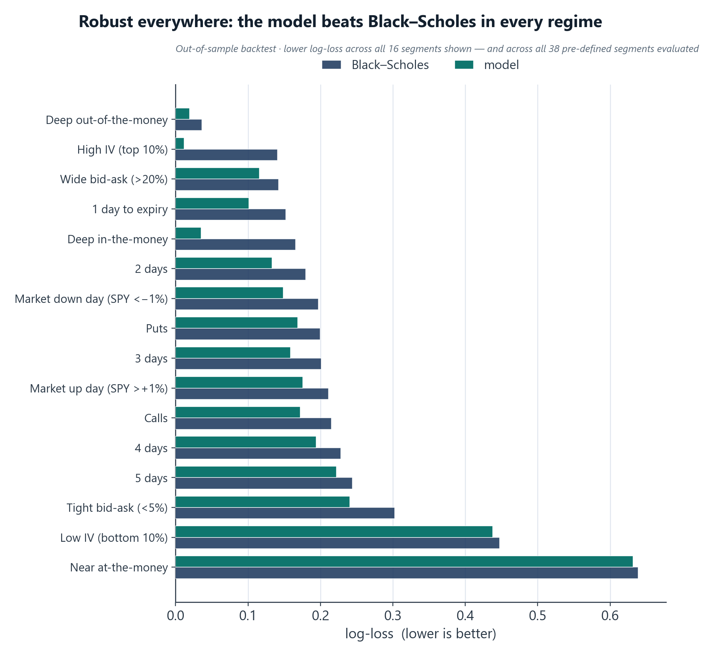

TL;DR
While building ShareShark's options-pricing engine I twice hypothesized that more specialized models would price better: first a separate model per market-timing window, then a dedicated end-of-day model trained on synthetic data. Both times I built the specialized version, backtested it honestly against a fair baseline, and the data said the same thing: one model covering the whole short-dated range wins, on accuracy and on production simplicity. I shipped the single model and deleted the rest.
Why it was tempting
On a prediction platform a price encodes a probability, so pricing quality is everything, and two "more clever = better" instincts looked obviously right:
- Timing windows. Weekend and after-hours prices lean on Bitcoin snapshots captured at specific times (Fri 4pm, Sat 8am, Sun 8am, Sun 6:45pm) versus a normal weekday 4pm close. Each window carries different information → so train a model per window.
- Horizon specialization. An option expiring today (1 day to expiry) behaves differently from one expiring in a week → so a dedicated end-of-day (EOD) specialist should beat a generalist on EOD contracts.
Both are reasonable. Both are exactly the kind of complexity you add by assuming instead of measuring. So I measured.
Experiment 1: five timing-window models
I trained five separate LightGBM models (one per snapshot window), each with its own feature set, its own data pipeline, and snapshot-specific "time since last close" features, routed in production by the active snapshot. Then I backtested them apples-to-apples on the same held-out test set (1.2M rows):
| Model | Test log-loss | vs. Black-Scholes |
|---|---|---|
| Single general model | 0.1625 | −19.1% (best) |
| Sat 8am | 0.1636 | −18.5% |
| Normal weekday | 0.1640 | −18.3% |
| Friday 4pm | 0.1643 | −18.2% |
| Sun 8am | 0.1647 | −17.9% |
| Sun 6:45pm | 0.1650 | −17.8% |
The five "specialists" differed from each other by only 0.0014 log-loss, and the single general model beat every one of them (also best on AUC 0.980 and calibration error 0.0025). An ablation put the Bitcoin-timing signal at 0.24% of log-loss, roughly 1% of the total edge over Black-Scholes.

Verdict: the timing window barely mattered, and it's worth saying why. That overnight/weekend signal ideally wants live index-futures data, but a commercial futures feed was far too expensive for a startup to justify, so the models leaned on Bitcoin snapshots, the one liquid market that trades 24/7, as a free proxy for broad risk sentiment while equities were closed. For a ~1% slice of the edge, five models meant five data pipelines and five points of failure, for nothing. I collapsed them into one and kept a single lightweight Bitcoin freshness feed for weekend pricing; that was worth it, the five were not.
Experiment 2: the EOD specialist (a clever augmentation that still lost)
End-of-day contracts (expiring today) really are a different regime, so I built an EOD-specific model. The clever part: real DTE-1 training data is scarce, so I manufactured it. I took real DTE 2–5 options, re-labeled them against the next trading day's close (handling weekends/holidays via an exchange calendar), and regenerated every Greek at T = 1 day (recomputing delta/gamma/theta/vega/rho, the IV-derived features, and the moneyness buckets) to turn each into a synthetic "DTE-1" sample. That multiplied the DTE-1 training set several-fold (3.4M rows). I tried two architectures: direct prediction, and a Black-Scholes-residual model (LightGBM learning corrections on top of the BS price).
The honest result: every EOD variant lost to plain Black-Scholes on the real test set.
| Model | Test log-loss | vs. Black-Scholes |
|---|---|---|
| Black-Scholes baseline | 0.1456 | — |
| EOD (direct, best) | 0.1471 | +0.0015 (worse) |
| EOD (BS-residual, lean) | 0.1524 | +0.0068 (worse) |
| EOD (BS-residual, full) | 0.2064 | blew up |
DTE-1 is the one regime where Black-Scholes is already strongest, so a learned model had almost no room to add value, and the heavy residual variant destabilized completely. The augmentation was genuinely clever; the conclusion was still "don't ship this."
The trap I had to avoid: on its own synthetic DTE-1 dataset the EOD model posted a gorgeous-looking log-loss, but that's an easier task scored on different data. The fair comparison is EOD vs. Black-Scholes on the real test set, where it lost. Picking the comparison that's actually honest is what decides the call.

What won: one robust short-DTE model
A single model covering the full short-dated range (DTE 1–5/1–7) on real expiry labels: what shipped as the production EOW model. It won on every axis:
- Accuracy & calibration (backtest): on the full backtest (a broader test set than the specialist-comparison subset in Experiment 1), AUC 0.979, log-loss 0.171, expected-calibration-error 0.0021, versus a Black-Scholes baseline at AUC 0.973, log-loss 0.207, ECE 0.040. The single model's calibration was an order of magnitude better than Black-Scholes.
- Production simplicity: one model, one data pipeline, no snapshot-routing logic, no synthetic-data step. Easier to serve in real time, far fewer failure modes, one thing to monitor.

On top of it sits a separate correlation-aware multi-leg pricer (a t-copula Monte-Carlo overlay for correlated multi-leg entries), but the pricing brain is the one model. (This is the same model family whose weekend train/serve-skew bug I later caught and fixed; see the QuantShark case study.)
What this demonstrates
- Calibrated experimentation over intuition. I had a plausible thesis twice, built it, measured it on held-out data, and let the result overrule me, instead of shipping complexity because it felt smart.
- Simplicity as a feature, not a compromise. The winning architecture was also the simplest to operate. That alignment is worth protecting.
- Knowing which comparison is fair. The flattering synthetic-data number would have justified the wrong decision; the honest baseline comparison killed it.
Validation methodology
Temporal split (train on earlier data, test on a later held-out period); the same held-out test set across compared models; log-loss, AUC, and calibration error (ECE) all reported; Black-Scholes as the baseline everything is measured against. Where a comparison wasn't apples-to-apples (synthetic DTE-1 vs. real), I flag it rather than quote the flattering figure.
Tech stack
Python · LightGBM · scikit-optimize (Bayesian search) · SciPy / NumPy (vectorized Black-Scholes & Greek regeneration) · pandas · temporal cross-validation.
Honest notes
All figures are backtest/validation on historical data; ShareShark ran a year of free-to-play and a small real-money soft launch (~50 users), so these are model-quality backtest results, not realized P&L. "Short-DTE" appears as DTE 1–5 in the comparison files and DTE 1–7 in the deployment plan. The synthetic-augmentation multiple is approximate. The multi-leg pricer is an overlay on the single model, not a second pricing model.